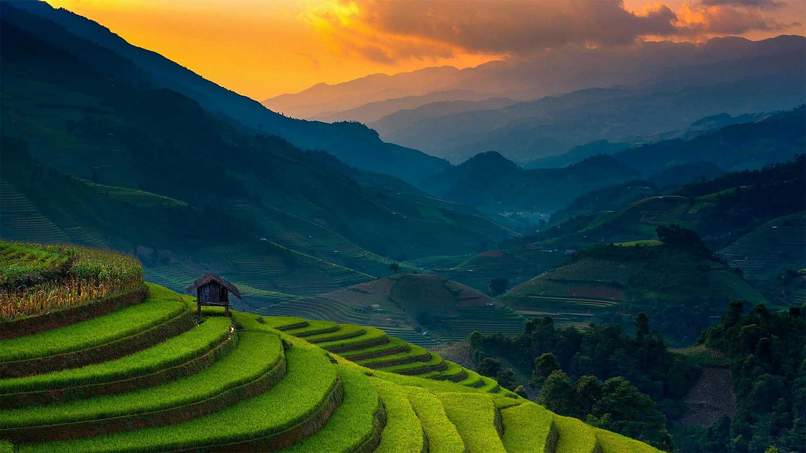
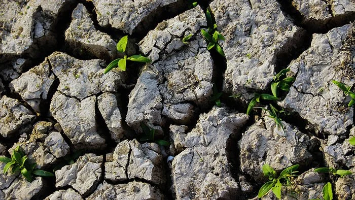

Lesson 1
AGRIKULTURA
- Isang agham at sining na may kinalaman sa pagpaparami ng mga hayop at mga tanim o halaman
- Ito ay may kaugnayan sa lahat ng gawain na sangkot ang mga hayop at halaman.
- AGER=Lupa; CULTURA=Paglilinang

Lesson 2
Mga Gawain sa Sektor ng Agrikultura
- Pagsasaka
- Pangingisda
- Paghahayupan
- paggugubat/pagtrotroso
Gampanin ng Pagsasaka
- Pangunahing pananim: palay, mais, niyog, tubo, saging, pinya, atbp. na karaniwang kinokonsumo sa loob at labas ng bansa.
- Tinatayang umabot ng ₱797.731 bilyon ang kita mula sa pagsasaka
Gampanin ng Pangingisda
- Nauuri sa tatlo: komersiyal, munisipal, at aquaculture Bahagi din nito ay ang panghuhuli ng hipon, sugpo
Gampanin ng Paghahayupan
- May kinalaman sa mga hayop na itinaas para sa karne, hibla, gatas, itlog, atbp.
- Kasama rito ang pang-araw-araw na pangangalaga, pumipili ng pag-aanak at pagpapalaki ng mga hayop
Gampani ng Paggugubat
- Patuloy na nililinang ang ating mga kagubatan bagamat tayo ay nahaharap sa suliranin ng pagkaubos ng mga yaman nito
- Pinagkukunan ng: plywood, tabla, troso, at veneer.
- Pinagkakakitaan din ang rattan, nipa, anahaw, kawayan, atbp.
Lesson 3
Kahalagahan ng Agrikultura
- Pinagmumulan ng pagkain
- Pinagkukunan ng hilaw na materyales upang makabuo ng panibagong produkto
- Nagkakaloob ng trabaho sa maraming Pilipino
- Nagpapasok ng dolyar sa ating bansa
- Pinagkukunan ng sobrang manggagawa patungo sa ibang sektor ng ekonomiya
Lesson 4
Mga Suliranin ng Agrikultura
Pagsasaka
- Pagliit ng lupang sakahan
- Paggamit ng makabagong teknolohiya
- Kakulangan ng mga pasilidad at imprastraktura sa kabukiran
- Kakulangan ng suporta mula sa iba pang sektor
- Pagbibigay prayoridad sa sektor ng industriya, pagdagsa ng dayuhang kalakal
- Climate Change
Pangingisda
- Mapanirang operasyon ng malalaking komersiyal na mangingisda
- Epekto ng polusyon sa pangisdaan
- Lumalaking populasyon ng bansa
- Kahirapan sa hanay ng mga mangingisda
Paghahayupan
- Pagkakaroon ng mga peste sa alagang hayop tulad ng baboy at manok
Paggugubat
- Mabilis na pagkaubos ng mga likas na yaman

Lesson 5
Mga Patakaran at Programa Hinggil sa Pagpapaunlad sa Sektor ng Agrikultura
PANAHON NA HINDI PA NASASAKOP ANG PILIPINAS
- Ang mga sinaunang Pilipino ay nakakapagmay-ari ng lupa sa pamamagitan ng unang paggamit o bahag.
- Wala pang titulo/rights noon.
- Ang pinagbabahasan lamang ay salita ng bawat isa.
PANAHON NG KASTILA
- Encomienda System – lupang gantimpala sa mga Espanyol.
PANAHON NG AMERIKANO
- Binigay ng Amerika ang 160,000 hectares ng lupa mula sa mga prayle.
- Land Registration Act 1902
- Public Land Act 1902
PANAHON NG KASARINLAN
- Batas Republika Blg. 1160 – NARRA
- Nagtatag sa National Resettlement and Rehabilitation Administration (NARRA)
- Batas Republika Blg. 1190 ng 1954
- Proteksyon sa mga magsasaka.
- Laban sa absentee landlord.
- Agricultural Land Reform Code 1963
- Nilagdaan ni Diosdado Macapagal.
- Nagpalaya sa mabigat na trabaho ng magsasaka mula sa kanilang pagkaalipin sa utang at kahirapan.
- Atas ng Pangulo Blg.2 ng 1972
- Isailalim sa reporma sa lupa ang buong Pilipinas noong Panahon ni Pangulong Marcos
- Atas ng Pangulo Blg.27 ng 1972
- Bibilhin ng pamahalaan ang mga lupang sakahan na taniman ng palay/mais na lampas sa 7 ektaryang limitasyon at ipamamahagi ito sa mga magsasakang walang lupa.
- CARL – Batas Republika Blg. 6657 ng 1988
- “Comprehensive Agrarian Reform Law (CARL)” na inaprubahan ni Corazon Aquino noong Hunyo 10, 1988
- Kabilang dito ang lahat ng publiko at pribadong lupang agrikultural at nakapaloob sa Comprehensive Agrarian Reform Program (CARP)
- Ipinamamahagi ang lahat ng lupang agrikultural anuman ang tanim nito sa mga walang lupang magsasaka.
- Matatapos sana sa 10 taon ngunit ginagawa pa rin ang batas hanggang ngayon.